R5.MDEE.15 · Stratégie de contenu et rédaction web · Mme Z. Obaidalahe
Romane Da Silva, Yoan Bailleul & Sofian Chtioui · BUT3 MDEE · IUT de Roubaix
1 / 11
Bonjour à tous. Qui ici a déjà enregistré un cours sur son téléphone pour ne rien rater ?
C'est exactement le besoin de Plaud, la marque que nous avons auditée : de petits enregistreurs qui transcrivent et résument les conversations grâce à l'IA.
Nous avons suivi la démarche du cours, étape par étape, de l'inventaire jusqu'aux recommandations.
Sommaire
Les six étapes de l'audit de contenus, appliquées à Plaud.
Voici notre plan. On commence par vous présenter la marque, pour ceux qui ne la connaissent pas.
Ensuite, on suit les étapes du cours : l'inventaire du site et d'Instagram, sans jugement, puis l'application de la grille sur 18, la comparaison avec deux concurrents, et enfin le SWOT et nos recommandations.
On termine par un bonus : les dix questions que la cible pose vraiment.
Qu'est-ce que Plaud ?
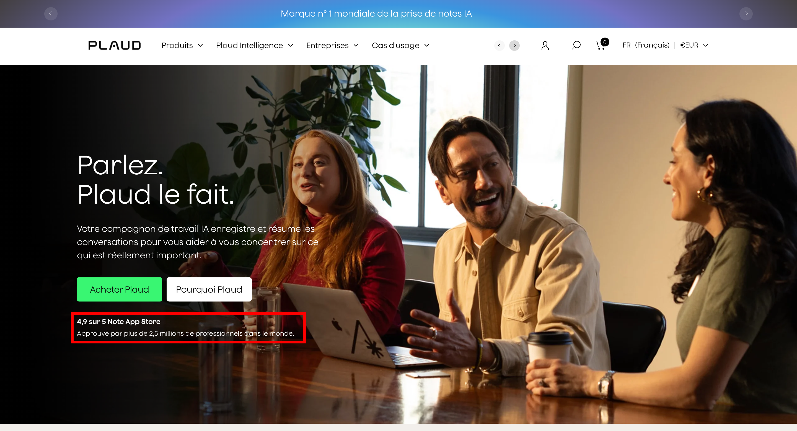
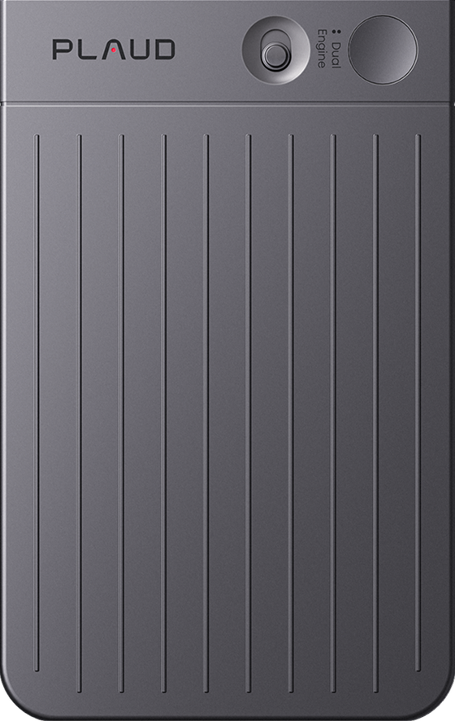
Note169,90 €
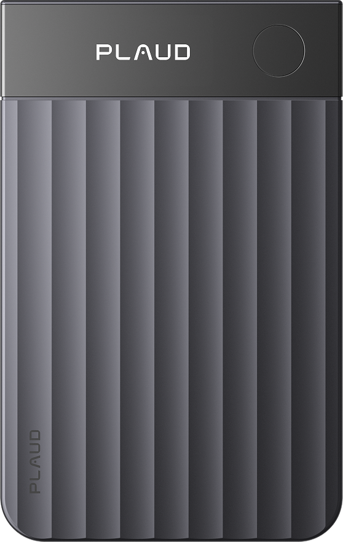
Note Pro189 €
NotePin169,90 €
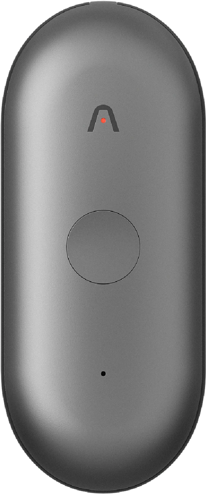
NotePin S179 €
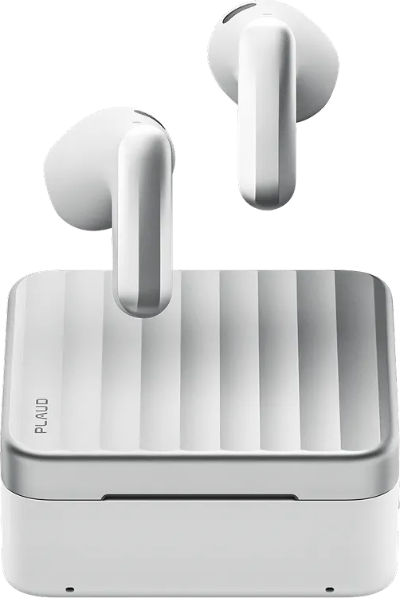
Oneprécommande
2,5 Mprofessionnels utilisateurs
4,9 / 5note sur l'App Store
4,7 / 5sur Trustpilot, 2 000+ avis
Source : fr.plaud.ai, page d'accueil, (consulté le 26/09/2026).
3 / 11
Plaud, c'est une marque d'enregistreurs à IA. On pose l'appareil sur la table, ou on le porte sur soi, il enregistre la conversation, puis l'application la transcrit et en fait un résumé.
La gamme compte cinq appareils, de 169,90 euros à 189 euros, plus le Plaud One, en précommande. Le modèle repose aussi sur un abonnement pour la transcription.
Sur son site français, la marque revendique 2,5 millions d'utilisateurs professionnels, une note de 4,9 sur l'App Store et de 4,7 sur Trustpilot : c'est encadré en rouge sur la capture.
Inventaire : 5 pages du site
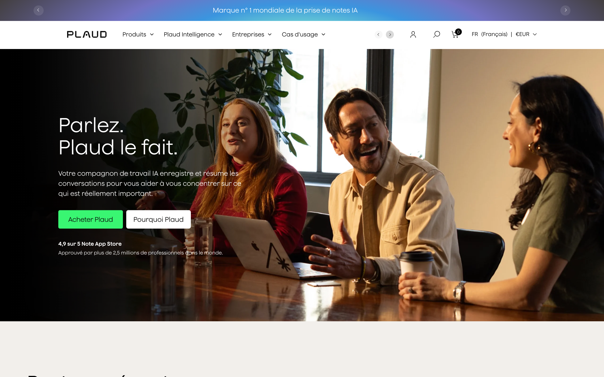
Accueil
Format
Page d'accueil, ~900 mots
Date
Aucune
Thème
La marque, la gamme, les métiers
CTA
« Acheter Plaud », « Pourquoi Plaud »
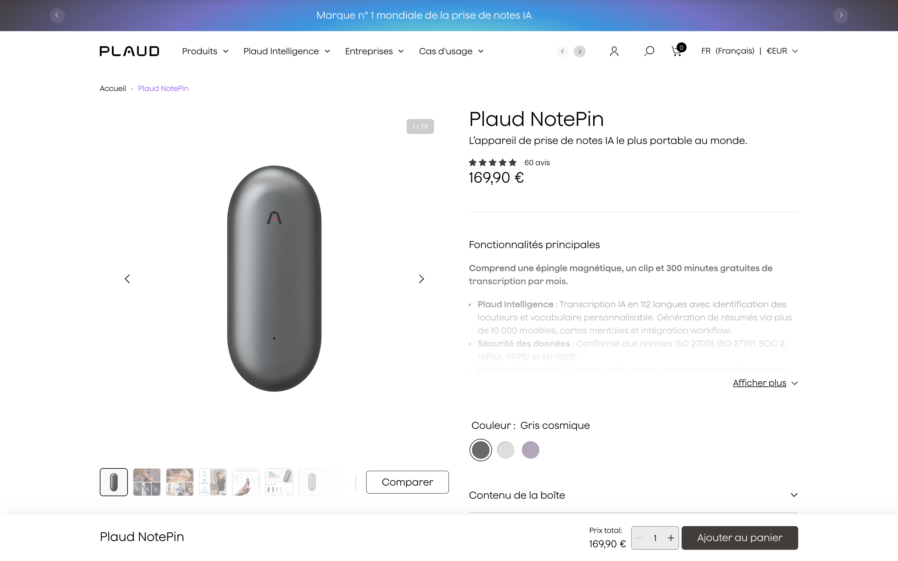
Fiche NotePin
Format
Fiche produit, ~2 360 mots
Date
Dernier avis du 25/05/2026
Thème
L'appareil, 60 avis, 169,90 €
CTA
« Ajouter au panier »
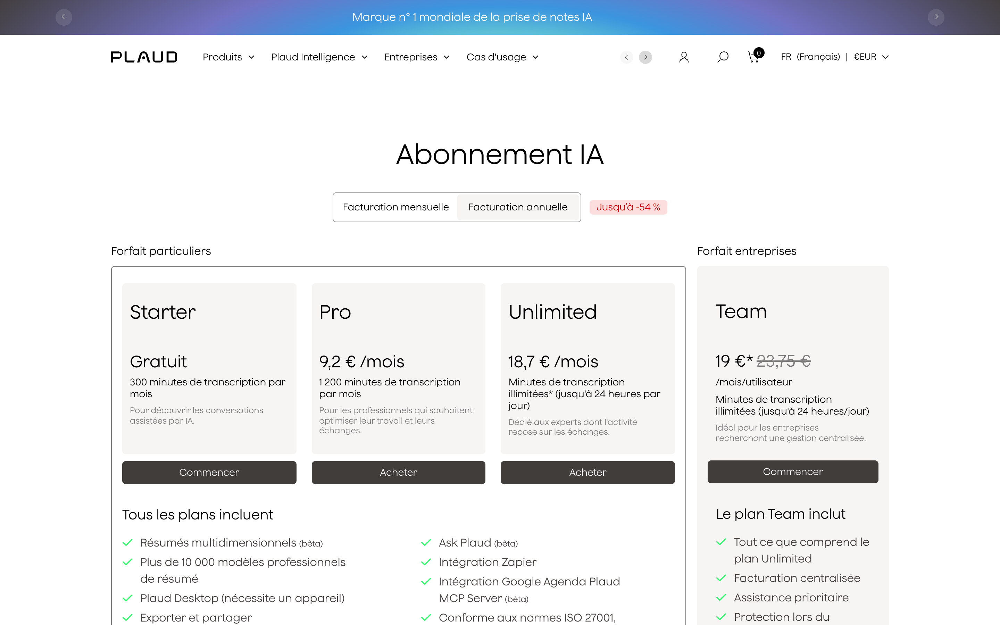
Tarifs
Format
Tarifs et FAQ, ~620 mots
Date
Offre jusqu'au 30/11/2026
Thème
4 forfaits, de 0 à 18,7 €/mois
CTA
« Commencer », « Acheter »
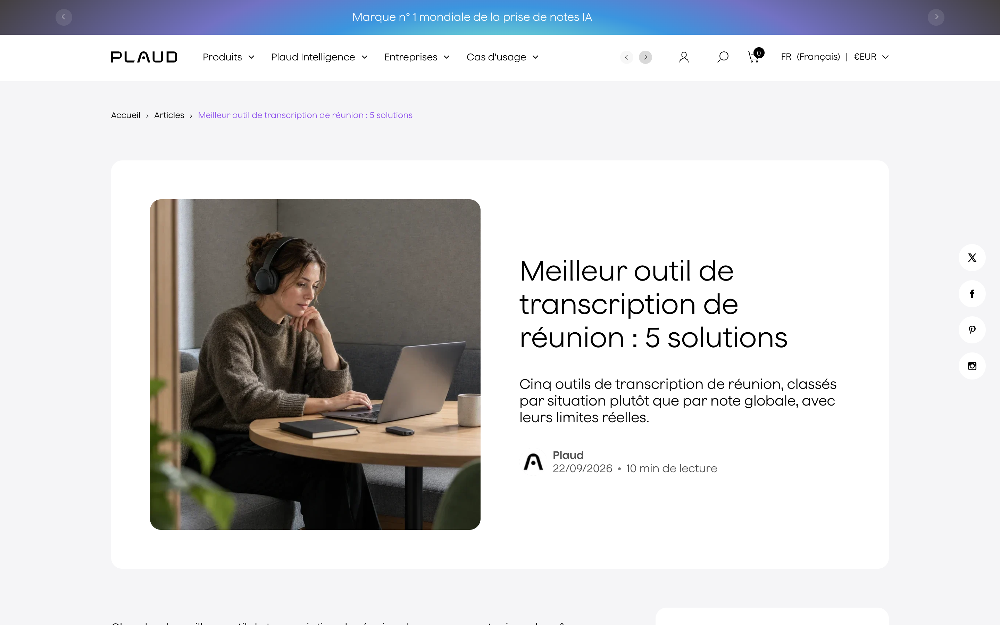
Blog
Format
Article, ~2 150 mots, 10 min
Date
22/09/2026
Thème
5 outils de transcription de réunion
CTA
Aucun bouton, liens dans le texte
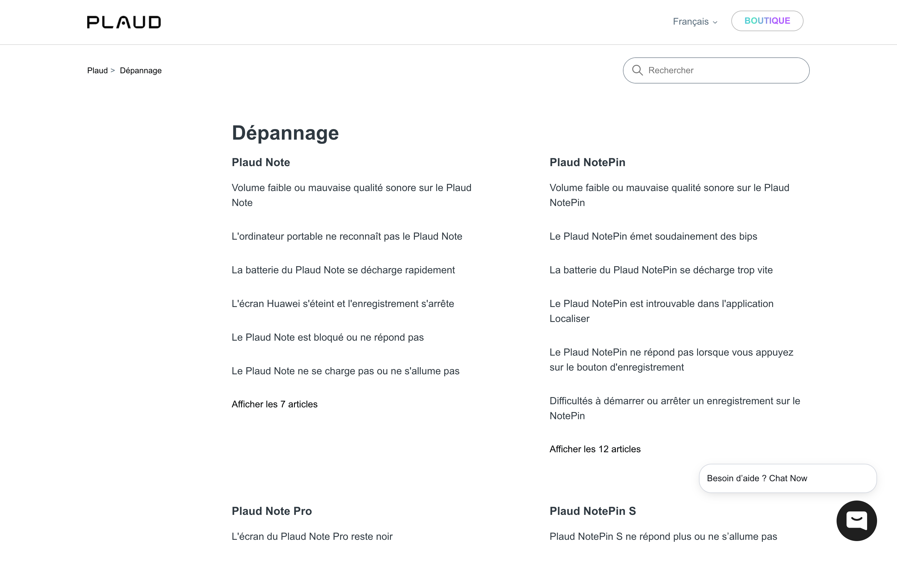
« FAQ » du menu
Format
Centre d'aide, 71 articles
Date
Aucune
Thème
Dépannage par appareil
CTA
« Chat Now » (en anglais)
Source : fr.plaud.ai et support.plaud.ai/hc/fr, 5 pages clés, (consulté le 26/09/2026).
4 / 11
Première étape de l'audit : l'inventaire. Comme la prof nous l'a expliqué, on recense de manière neutre, sans dire encore si c'est bien ou pas.
On a retenu cinq pages clés du site français : l'accueil, la fiche d'un produit, le NotePin, la page des tarifs, le dernier article du blog et la page ouverte par le lien « FAQ » du menu.
Pour chacune, on a relevé le format, la date visible, le thème et le CTA, c'est-à-dire le bouton qui pousse à agir.
Inventaire : 10 posts Instagram
@plaud_official148 k abonnés · 43 publications · 10 dernières, du 20/04 au 18/09/2026
18/09
Image · Plaud One en situation
323
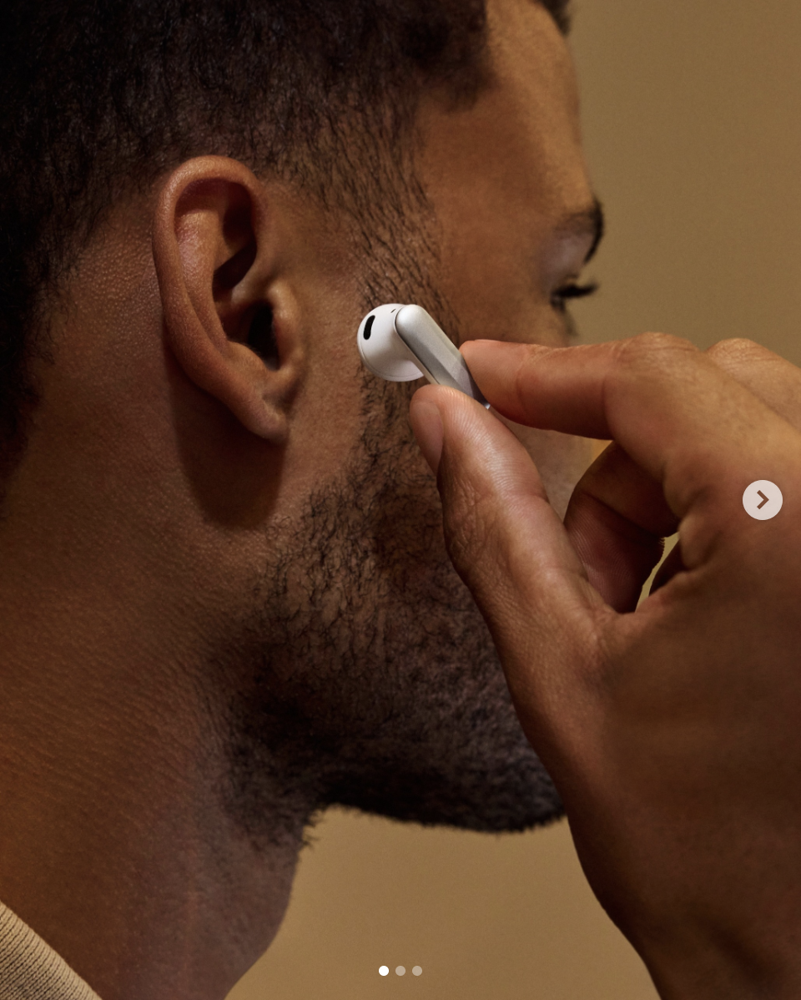
31/08
Carrousel · Salon IFA de Berlin
1388
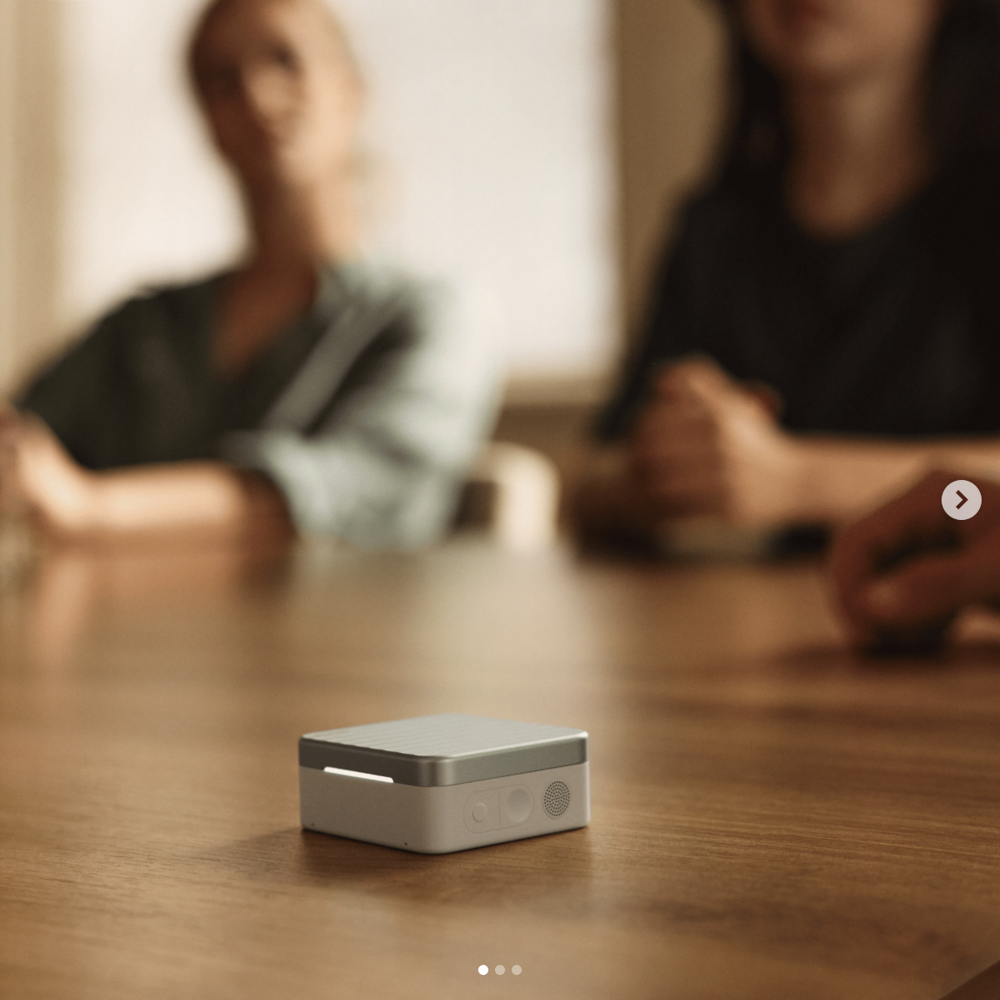
28/08
Carrousel · Bénéfices de Plaud One
33912
27/08
Reel · Lancement de Plaud One
30523
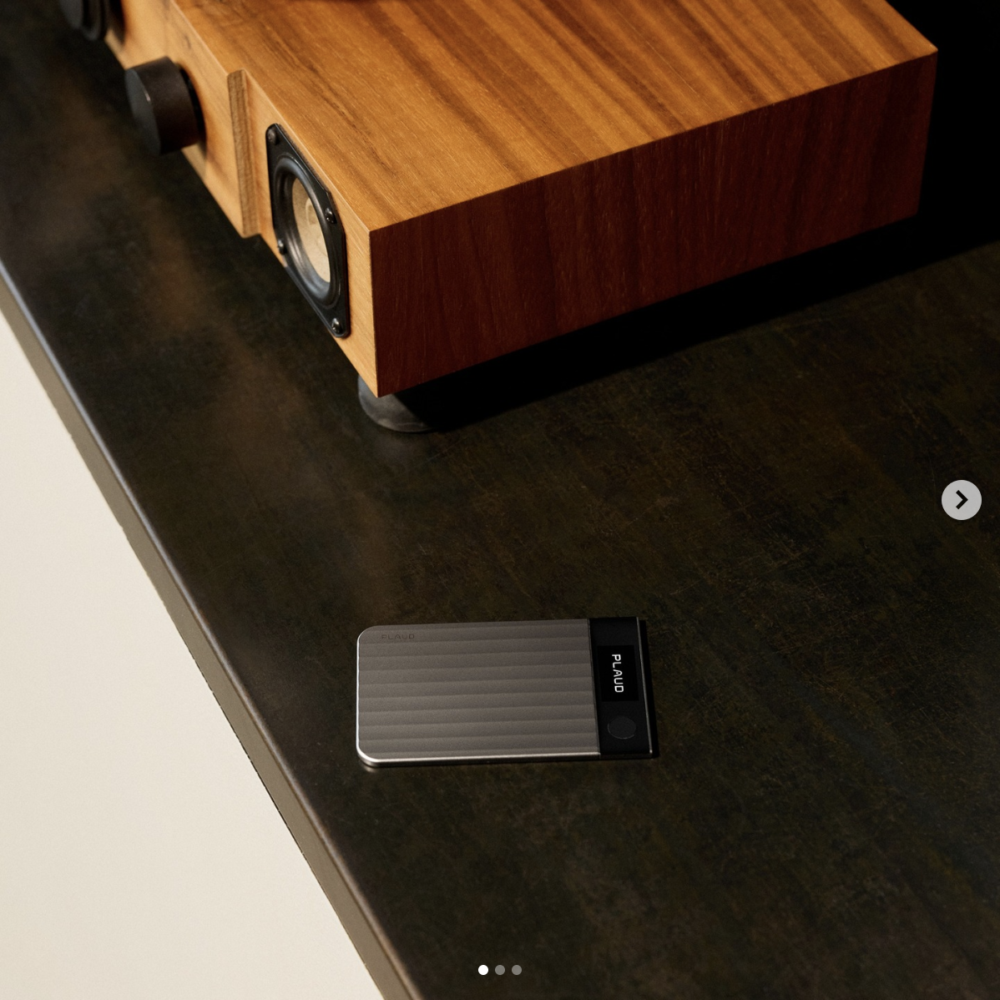
07/07
Carrousel · Manifeste de marque
12019
30/06
Image · « Be Present »
401
29/06
Image · Inspiration
5310
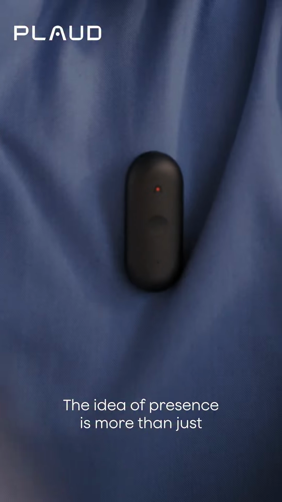
14/05
Reel · Témoignage, finance
15932
06/05
Reel · Témoignage, immobilier
17221
20/04 · le plus aimé
Reel avec le créateur @danieleditorliv
2 160130
Source : instagram.com/plaud_official, 10 dernières publications, (consulté le 26/09/2026).
5 / 11
Même exercice pour le réseau social. On a choisi Instagram, le compte le plus suivi de Plaud : 148 000 abonnés.
Voici les dix dernières publications, avec leurs j'aime et leurs commentaires. Elles sont toutes en anglais, et la plupart plafonnent entre 30 et 340 j'aime.
Une seule sort du lot : ce Reel, tourné avec un créateur, Daniel, qui raconte comment il utilise Plaud. Plus de 2 000 j'aime et 130 commentaires. En remontant tout le compte, on retrouve une autre collaboration avec un créateur, allemand cette fois, parmi les trois posts les plus aimés. Pour reprendre le modèle PESO, c'est du média partagé qui fonctionne.
Application de la grille
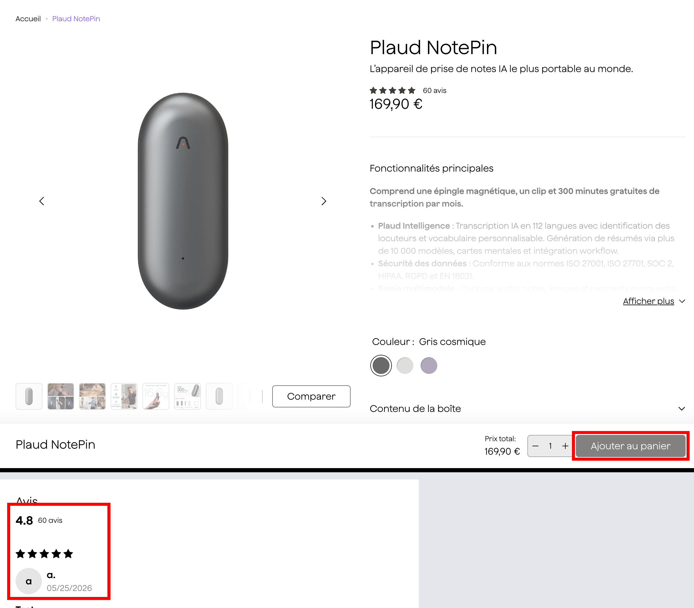
S2Fiche NotePin
Pertinence
Lisibilité
Cohérence
Fraîcheur
Visibilité
Conversion
« Ajouter au panier », mais dates d'avis à l'américaine
15 / 18Conserver
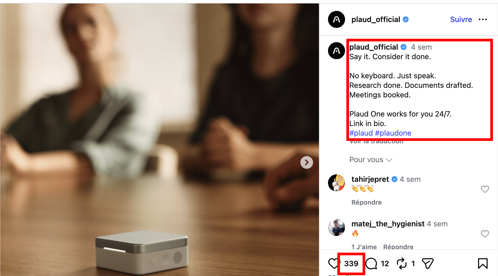
I3Carrousel Plaud One
Pertinence
Lisibilité
Cohérence
Fraîcheur
Visibilité
Conversion
Bénéfices clairs, « Link in bio »
16 / 18Conserver
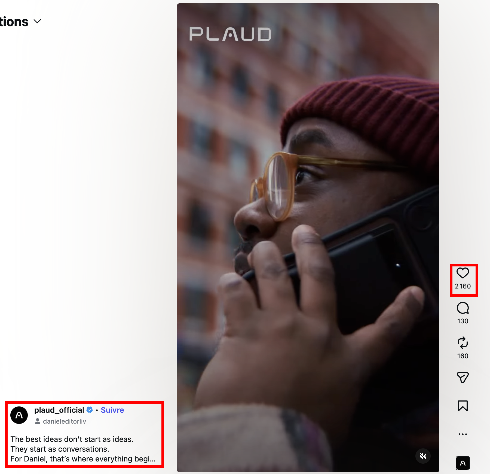
I10Reel avec un créateur
Pertinence
Lisibilité
Cohérence
Fraîcheur
Visibilité
Conversion
2 160 j'aime, mais aucun lien
15 / 18Conserver
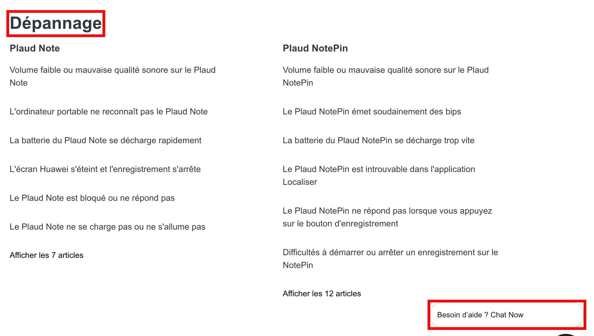
S5« FAQ » du menu
Pertinence
Lisibilité
Cohérence
Fraîcheur
Visibilité
Conversion
Mène au dépannage, « Chat Now » en anglais
10 / 18Améliorer
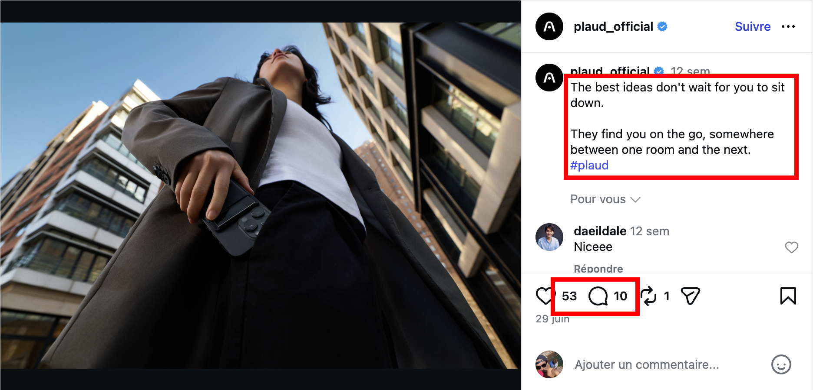
I7Image inspiration
Pertinence
Lisibilité
Cohérence
Fraîcheur
Visibilité
Conversion
Aucun produit, 1 seul hashtag
11 / 18Améliorer
Sources : Z. Obaidalahe, support de la séance 3, grille d'évaluation ; fr.plaud.ai et Instagram, (consulté le 26/09/2026).
6 / 11
Deuxième étape : l'évaluation. On note chaque contenu de 1 à 3 sur les six critères de la grille vue en cours : pertinence, lisibilité, cohérence, fraîcheur, visibilité et conversion. De 15 à 18, on conserve ; de 10 à 14, on améliore.
On a évalué nos quinze contenus ; en voici cinq, du meilleur au plus faible. La fiche produit et le carrousel sur Plaud One sont solides. Le Reel avec un créateur plaît, mais il n'a aucun lien vers le produit.
Et surtout, le lien « FAQ » du menu ne mène pas à une foire aux questions, mais à du dépannage, avec des restes d'anglais. Sur nos quinze contenus, la conversion est le critère le plus faible.
Deux concurrents qui laissent la place
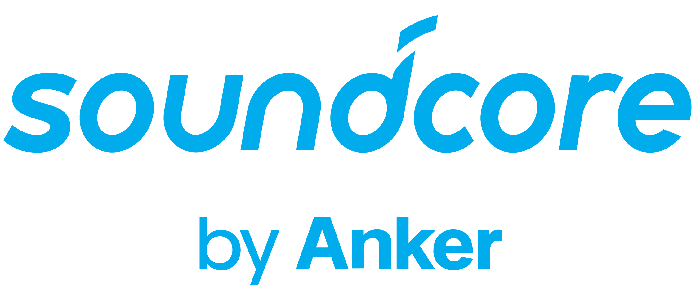
13,3 / 18concurrent direct : le Soundcore Work, 169,99 €
15 / 18concurrent indirect : la même promesse sans appareil
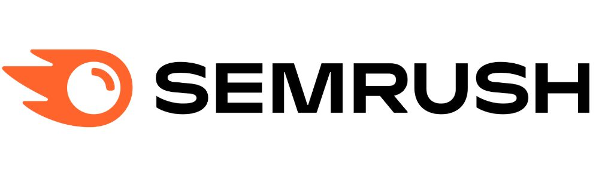
trafic, visibilité dans les IA, base France
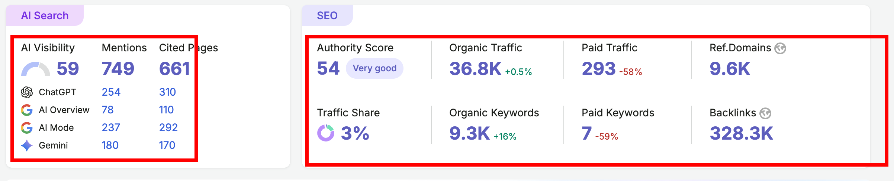
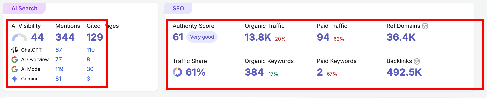
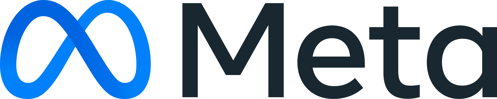
Bibliothèque publicitaire, publicités actives
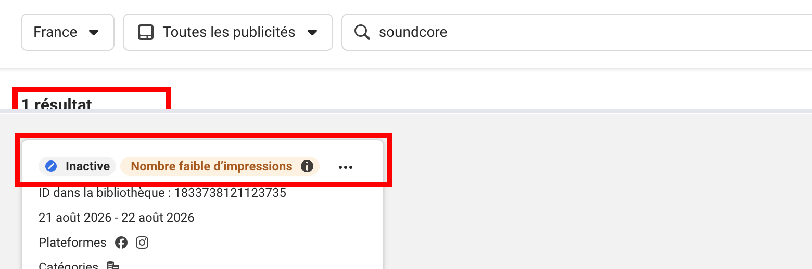
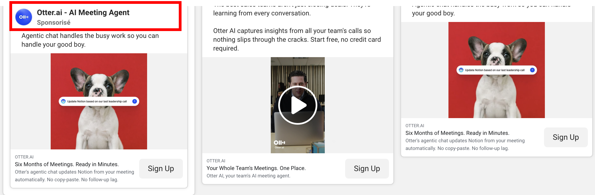
Réseaux sociauxabonnés et publications, comptes officiels
146 k2 166 posts
338,8 kactif
143 kactif
40,3 k4 692 posts
33,9 k467 vidéos
3 7660 post
19,4 k0 post
36,2 kactif
17 k12,5 k posts
10 kinactif (2022)
4,5 k126 vidéos
1 4902 vidéos
Sources : Semrush, base France ; Bibliothèque publicitaire Meta ; Instagram, TikTok, Facebook, X, YouTube, LinkedIn, (consulté le 26/09/2026).
7 / 11
Troisième étape : le benchmark. On a appliqué la même grille à deux concurrents, et on les a passés dans les outils vus en cours.
Le concurrent direct, c'est le Soundcore Work, d'Anker : un enregistreur IA au même prix. Semrush montre que la marque est bien plus citée que Plaud par les IA comme ChatGPT, mais c'est toute la marque Anker, surtout les écouteurs. Dans la bibliothèque publicitaire de Meta, en France, on ne trouve qu'une seule publicité, même pas de la marque. Sur les réseaux, Soundcore est très présent, surtout sur TikTok avec 338 000 abonnés, mais pour ses écouteurs : le Work n'y apparaît pas, et sa page LinkedIn n'a publié aucun post.
Le concurrent indirect, c'est Otter.ai, une application de transcription. Elle fait beaucoup de publicité aux États-Unis, comme on le voit ici, mais rien en France. Elle mise sur LinkedIn et X, avec un public professionnel, alors que son Instagram n'a aucune publication et que son Facebook est à l'arrêt depuis 2022.
SWOT de contenus
Forces interne
Identité cohérente : 41 / 45
4,9 sur l'App Store, 2,5 M d'utilisateurs
Site et aide en français
Faiblesses interne
Aucune FAQ avant achat
Instagram en anglais
62 % du trafic Google tape déjà « Plaud »
Opportunités externe
La rentrée : intérêt à 84 / 100
« dictaphone ia » : 260 recherches, facile
Concurrents absents d'Instagram
Menaces externe
Logiciels français devant sur Google
Téléphones qui transcrivent
Méfiance envers l'IA américaine
Sources : grille des slides 6 et 7 ; Semrush, base France ; Google Trends, France, (consulté le 26/09/2026).
8 / 11
On résume le diagnostic dans un SWOT de contenus.
En forces : une identité très cohérente, de très bonnes notes clients et une vraie version française.
En faiblesses : aucune FAQ pour rassurer avant l'achat, un Instagram en anglais, et un trafic Google qui vient surtout de gens qui connaissent déjà la marque : d'après Semrush, 62 % des visites arrivent de recherches sur le nom « Plaud ».
Côté opportunités : c'est la rentrée, l'intérêt pour Plaud remonte dans Google Trends ; une recherche comme « dictaphone ia » est tapée 260 fois par mois et facile à conquérir ; et les concurrents ne sont pas présents sur Instagram.
Côté menaces : des logiciels français comme Noota sont mieux placés sur Google, les téléphones et les visioconférences transcrivent eux aussi, et une partie de la cible se méfie des données confiées à une IA américaine.
Pour comprendre les opportunités :
La rentrée : dans Google Trends, l'intérêt pour Plaud en France est remonté à 84 sur 100 fin septembre. Le pic de l'année dernière tombait aussi à la rentrée, c'est donc le bon moment pour publier.
« dictaphone ia » : 260 recherches par mois en France, et Semrush juge le mot-clé « facile » à conquérir. Plaud n'y est pas bien placé.
Concurrents absents d'Instagram : Otter n'y a rien publié et Soundcore n'y montre pas son enregistreur, la place est libre.
Pour comprendre les menaces :
Logiciels français devant sur Google : Semrush classe Noota, Allo ou Voicit comme les concurrents de Plaud sur ses mots-clés.
Téléphones qui transcrivent : Teams, Zoom et le Dictaphone de l'iPhone font déjà une partie du travail. La cible le demande : « quelle différence avec l'application Dictaphone ? ».
Méfiance envers l'IA américaine : une vraie question de la cible, « toutes les données vont alimenter les IA basées au US ».
Des réponses, mais loin des questions
Faiblesse principale5 questions sur 10 de la cible n'ont qu'une réponse partielle
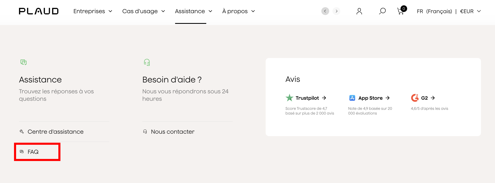
↓ le lien « FAQ » ouvre…
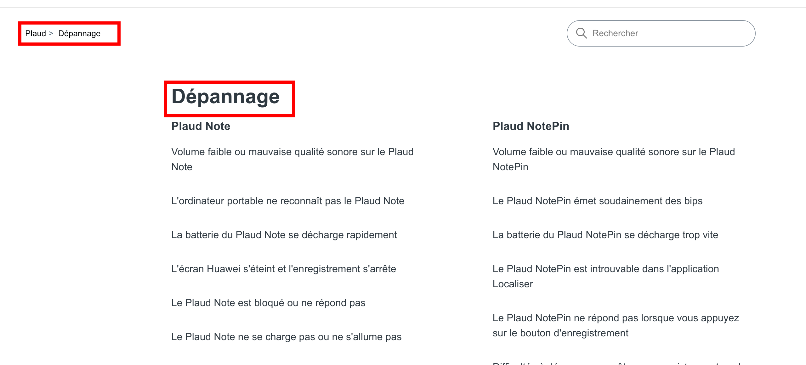
1
Créer une FAQ avant achat, en français PrioritaireLes 10 vraies questions, reliées depuis la fiche produit, les tarifs et la bio Instagram
2
Viser « dictaphone ia » sur GooglePages comparatives en français, avec des tableaux
3
Un Instagram en français, avec des créateursUn CTA par post, des réponses aux commentaires
Sources : fr.plaud.ai, menu « Assistance » ; support.plaud.ai/hc/fr, « Dépannage » ; Semrush, base France, (consulté le 26/09/2026).
9 / 11
Tout cela nous mène à notre faiblesse principale : les réponses existent, mais elles ne sont pas là où la cible se pose ses questions. Regardez : dans le menu, le lien « FAQ » ouvre une page de dépannage, sans aucune question d'avant achat. Et sur les dix questions qu'on a relevées, la moitié n'obtient qu'une réponse partielle.
D'où notre recommandation prioritaire : créer une FAQ avant achat, en français, construite à partir de ces dix vraies questions. Dans le vocabulaire du cours, c'est la décision « créer », qui comble un content gap. Et elle coûte peu, puisque les réponses existent déjà.
Deuxième recommandation : se positionner sur des recherches comme « dictaphone ia ». Troisième : un Instagram en français, avec des créateurs, puisque c'est le format qui marche le mieux.
Bonus : 10 questions de la cible
5 réponses complètes5 réponses partielles0 sans réponse
1
« Et doit on être abonné ? »YouTube, test Frandroid
Oui
2
« Do I still really need a Plaud sub? » (avec ChatGPT Plus)Reddit, 07/02/2026
Partiel
3
« Quantas horas posso usar o PLAUD sem […] pagar? »Reddit, 17/09/2026
Oui
4
« le traitement se fait en local ? »YouTube, test Frandroid
Oui
5
« toutes les données vont alimenter les IA basées au US »YouTube, test Frandroid
Oui
6
« how you handle the privacy and consent side »Reddit, 17/07/2026
Oui
7
« Everything was in the wrong language?! »Reddit, 09/09/2026
Oui
8
« How to obtain good and reliable transcriptions? »Reddit, 07/03/2026
Partiel
9
« Any way to record a teams meeting if I am wearing headphones? »Reddit, 16/08/2026
Partiel
10
« Mais quelle différence avec l'application Dictaphone ? »YouTube, test Frandroid
Partiel
Sources : Reddit, r/PlaudNoteUsers ; YouTube, test de Frandroid ; fr.plaud.ai et support.plaud.ai/hc/fr, (consulté le 25/09/2026).
10 / 11
En bonus, voici les dix questions que la cible pose vraiment, relevées sur le forum Reddit des utilisateurs et sous le test vidéo de Frandroid. Elles sont citées telles quelles.
Elles tournent autour de l'abonnement, de la confidentialité des données, de la qualité de la transcription et de l'utilité de l'appareil face au téléphone.
Plaud a une réponse à chacune, mais la moitié du temps elle est partielle ou mal placée. C'est exactement ce que notre FAQ viendrait corriger. Merci de votre attention.
Annexe : sources et outils utilisés
Plaud. (2026). Plaud, appareils de prise de notes IA : accueil, fiche NotePin, tarifs. fr.plaud.ai. 26/09/2026.
Plaud. (2026, 22 septembre). Meilleur outil de transcription de réunion : 5 solutions. fr.plaud.ai/blogs. 26/09/2026.
Plaud. (2026). Centre d'aide, catégorie « Dépannage ». support.plaud.ai/hc/fr. 26/09/2026.
Instagram. (2026). @plaud_official, profil et 10 dernières publications. instagram.com. 26/09/2026.
Instagram, TikTok, Facebook, X, YouTube, LinkedIn. (2026). Comptes officiels de Soundcore et d'Otter.ai. 26/09/2026.
Semrush. (2026). Domain Overview : plaud.ai, soundcore.com, otter.ai, base France. semrush.com. 26/09/2026.
Semrush. (2026). Keyword Overview : « dictaphone ia », « ia compte rendu reunion », France. semrush.com. 26/09/2026.
Otter.ai. (2026). Accueil et tarifs. otter.ai. 25/09/2026.
Obaidalahe, Z. (2026). R5.MDEE.15 Stratégie de contenu et rédaction web, support de la séance 3. IUT de Lille. Moodle.
Ce que Claude a fait
Chiffres clés
Recherche
Mise en page du support
Ce que le groupe a fait
Choix de la marque
Relecture des chiffres et des informations
Réflexion et approche réflexive
Romane Da Silva, Yoan Bailleul & Sofian Chtioui · BUT3 MDEE · IUT de Roubaix
11 / 11
Toutes nos sources sont ici. On s'est servis de Claude pour relever les chiffres clés et faire la recherche, mais chaque chiffre vient d'une capture qu'on a vérifiée, encadrée en rouge, et les notes de la grille ont été relues par le groupe.
 @plaud_official148 k abonnés · 43 publications · 10 dernières, du 20/04 au 18/09/2026
@plaud_official148 k abonnés · 43 publications · 10 dernières, du 20/04 au 18/09/2026 338,8 k
338,8 k 143 k
143 k 40,3 k
40,3 k 33,9 k
33,9 k 3 766
3 766